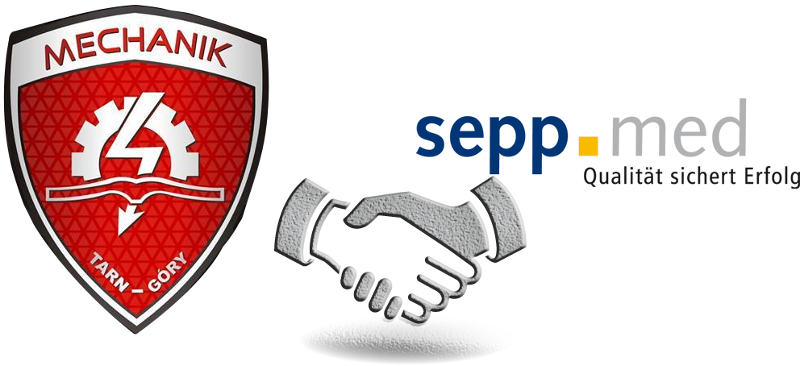

Współpraca między firmą SeppMed i ZSTiO.
Nasza współpraca rozpoczęła się w roku 2013. Pierwsze kontakty nawiązaliśmy dzięki pomocy starosty powiatu Erlangen-Höchstadt Eberharda Irllingera.
W ramach projektu Leonardo da Vinci uczniowie naszej szkoły już dwukrotnie mieli okazję odbyć miesięczne praktyki w firmie SeppMed.
Od roku 2016 firma współpracuje ze szkołą w ramach projektu Erasmus+. Osobami kontaktowymi w projektach są : w firmie SeppMed - Pan Wolfgang Barth
oraz w naszej szkole Pani Ilona Wdowiak.